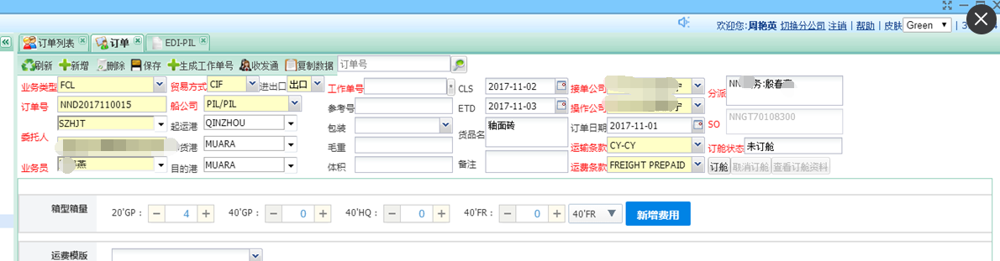
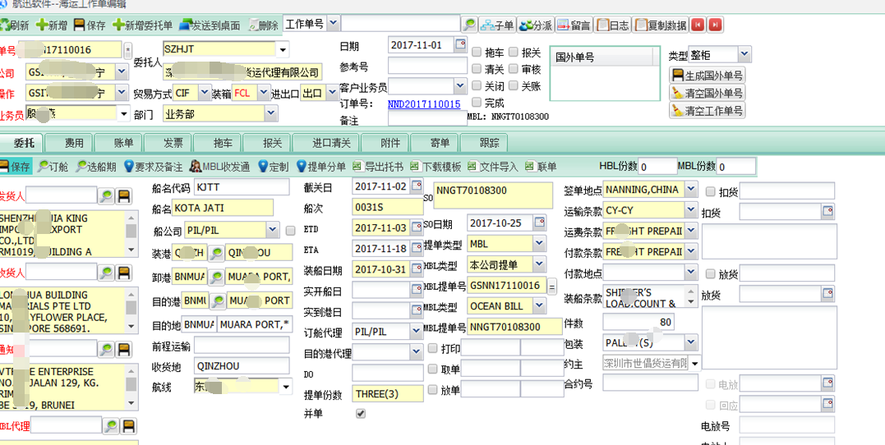
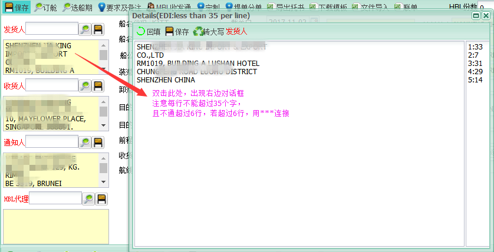
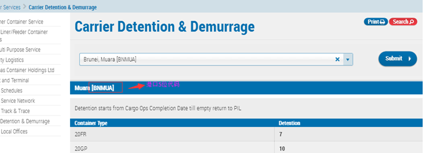
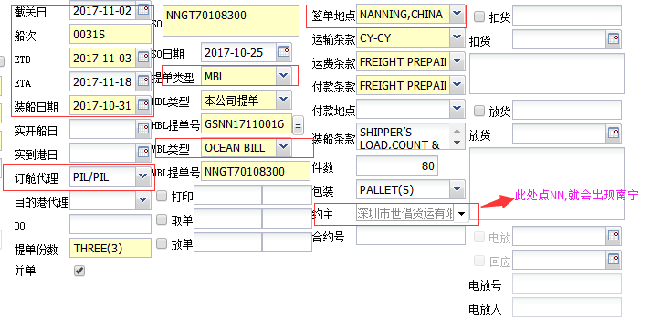
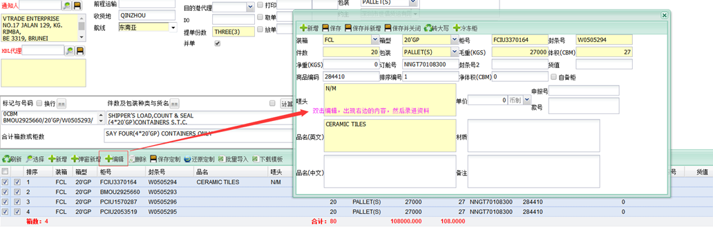
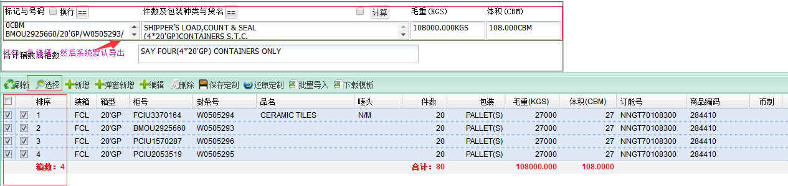
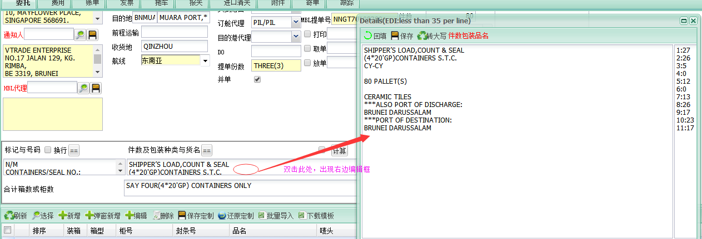
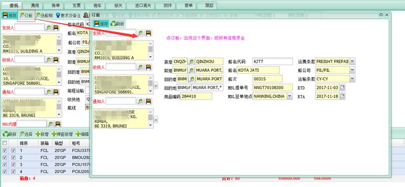

1.1. 先生成订单号，如下图：（请注意如果是HQ柜，系统里要选HC）：

2.2.生成订单号后，点击生成工作单号，然后到下面这个界面，这个界面要填写很多信息

3.A.Shipper/CNEE/Notify (一样的处理方式)
***连接的内容，要货描那里补上
：

4.B)船名代码及船期，港口 -- ESI以订舱 EDI以委托
b1.- 船名代码：（PIL目前就两条船来回走，船名代码如下）
KOTA JASA -- KJAA
KOTA JATI -- KJTT
b2--港口代码:(只能录5位代码，且只能按PIL的代码来录，如果不清楚代码，可以上PIL的网页去查)
网页如下：https://www.pilship.com/en-carrier-detention-and-demurrage-pil-pacific-international-lines/124.html
如果客人要求显示的港口很长，因对字符有限制，要用***来接接，在货描那里补上

b3- ETD,ETA (下面这板块，所有要选的资料，我都圈出来了，必选，要不然导不出)

C：录柜封号及分柜数据+品名&唛头 （不能出现任何中文字符及符号）
柜量多于1个柜时，品名及唛头录在第一个柜里，且每个柜号都要录6个数的HS code
如果要编辑品名及唛头的内容，就双击编辑，出现下图所示的对话框，然后就可以修改

D.录完分柜数据，品名/货描内容+唛头后，就按下面操作，打勾，点选择，系统就会默认导出 下面圈出来的，总件数，总毛重及总体积，以及提单要显示的货描内容

E: 对于货描内容的编辑

到这一步，差不多完成了，每一步都不要忘记保存，要不然做无用功，要重复好几次才能保存成功。  完成所有上面的内容，才能导出E-SI， 各位亲，请注意，每一步都不要忘记保存! 切记!!!
F.录完所有这些信息，还不能成功导出E-SI，还有录现在这一板块